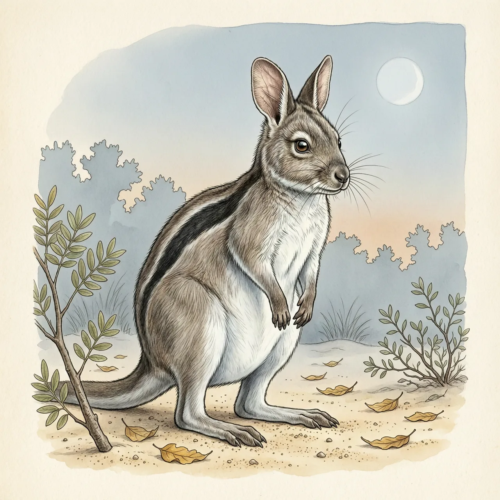
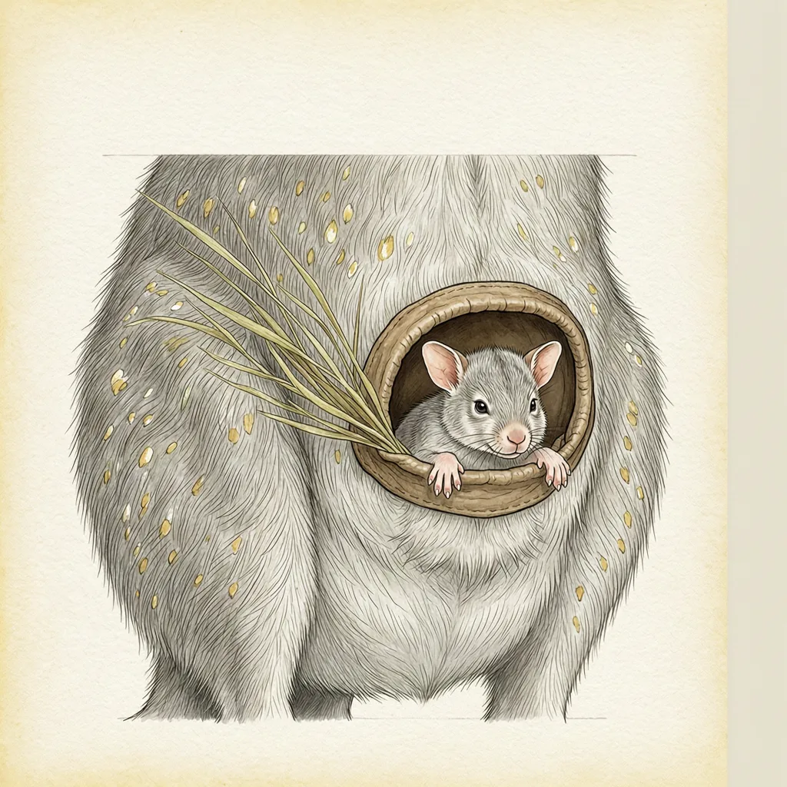

纹兔袋鼠自成一整个亚科，现存成员只有它自己。1963年在澳大利亚大陆灭绝后，仅存于西澳州近海的伯尼尔岛和Dorre岛。这种夜行有袋类平均重1.7公斤，水分主要来自食物；幼仔死亡后，一些雌性还能动用额外的胚胎。
天黑以后，纹兔袋鼠才从具舌相思树下的巢里出来活动。这种夜行有袋类如今只在西澳州近海的伯尼尔岛和Dorre岛上还找得到，另有一小群被引入Faure岛。它在大陆上曾有更大的舞台：西澳州西南部到南澳州都有它的踪迹。栖息地与食物的消失，加上掠食者的威胁，让大陆种群的最后记录停在1906年，1963年被认定在大陆灭绝。如今它全部的去处，是海对岸的几座小岛。
纹兔袋鼠的繁殖季从当年12月一直延续到次年9月。个体1岁性成熟，第二年就能生育；母亲通常每年只哺育一只幼仔，幼仔在育儿袋里生活约6个月，出袋后3个月断奶。更关键的是后面的事：幼仔一旦死亡，一些雌性纹兔袋鼠还能有额外的胚胎来哺育。至于雄性，它们争抢食物时充满攻击性，却很少把食物带回给雌性。
多数袋鼠都能找到一列列活着的近亲，纹兔袋鼠是例外。它的属曾被归进粗尾袋鼠亚科，后来因差异太大被单独拆出，自成一整个纹兔袋鼠亚科，而这个亚科现存的成员只有它一种。它名下有三个亚种，其中 L. f. albipilis 已标注灭绝。灰色长毛上散布黄、银色斑点，背部中央的深色条纹一路延伸到尾巴——名字里那个「纹」字的来历，就写在纹兔袋鼠身上。
